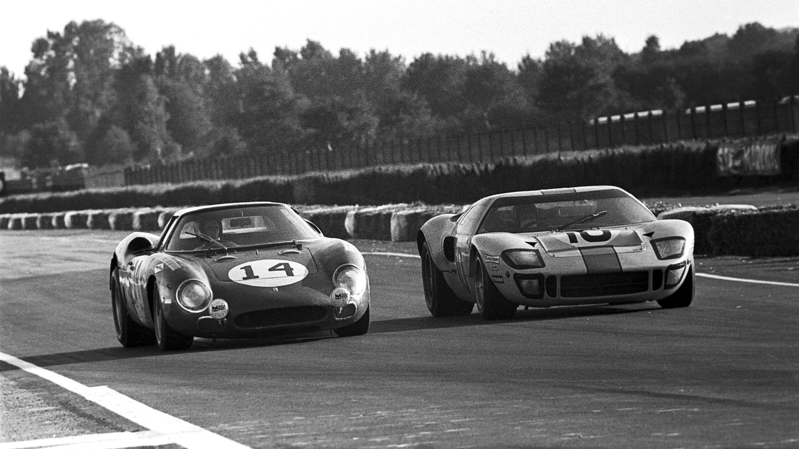
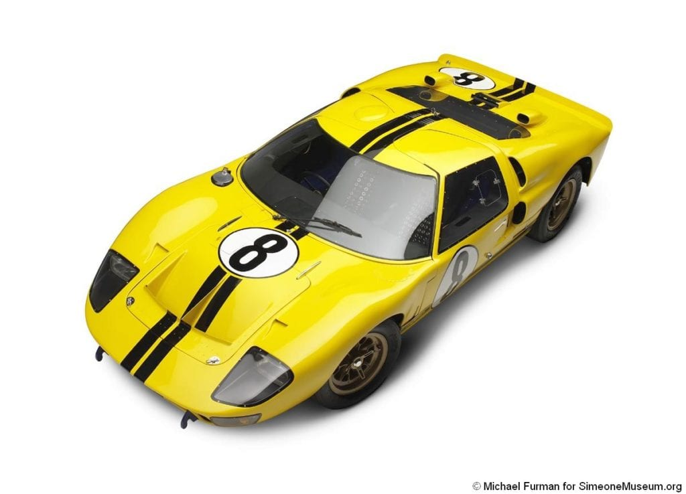

Todo empezó por un "no". Henry Ford II intentó comprar Ferrari, pero Enzo Ferrari se arrepintió en el último segundo. Enfurecido, Ford ordenó construir un coche que humillara a los italianos en su propio juego: las 24 Horas de Le Mans.
El Hito: Tras un inicio difícil, el GT40 logró lo impensable: ganar Le Mans cuatro veces seguidas (1966-1969).
La Curiosidad: Se llamaba "40" porque medía exactamente 40 pulgadas (101.6 cm) de altura.

Ford reclutó a Carroll Shelby, quien rediseñó el coche instalando un masivo motor V8 de 7.0 litros (427 pulgadas cúbicas).
1966: El Ford GT40 Mk II logró el histórico triplete (1º, 2º y 3º puesto) en Le Mans.
Innovación: Fue el primer coche en usar frenos de disco de cambio rápido y pruebas de túnel de viento extensivas.
Legado: El GT40 ganó cuatro años consecutivos, convirtiéndose en el único coche estadounidense en ganar Le Mans de forma absoluta.

Para el centenario de Ford, la marca resucitó el nombre con el Ford GT. Aunque visualmente era casi idéntico al original, era más alto y ancho para ser usable en la calle.
1966: El Ford GT40 Mk II logró el histórico triplete (1º, 2º y 3º puesto) en Le Mans.
Mecánica: Un V8 de 5.4L con supercargador que entregaba 550 hp y una transmisión manual de 6 velocidades.
Importancia: Se convirtió en un objeto de culto instantáneo por carecer de asistencias electrónicas modernas, ofreciendo una experiencia de conducción pura y "mecánica".

Ford sorprendió al mundo al anunciar un nuevo GT que rompía con la tradición del V8. En su lugar, montó un V6 Twin-Turbo de 3.5L basado en sus camionetas F-150, pero optimizado para la pista.
Aerodinámica: El diseño del túnel central (fuselaje estrecho) permitía que el aire fluyera a través del coche, no solo alrededor.
Tecnología: Introdujo una suspensión hidráulica que bajaba el coche 50 mm en milisegundos para el "Modo Pista" y un chasis de fibra de carbono ultra rígido.

Como despedida final, Ford lanzó el GT Mk IV, una versión exclusiva para circuitos que elimina todas las restricciones de las normativas de calle o de las ligas de carreras oficiales (Le Mans/IMSA).
Avances Finales: Carrocería "Longtail" para máxima estabilidad, transmisión de carreras secuencial y más de 800 hp.
Exclusividad: Solo se produjeron 67 unidades (en honor al año 1967) con un precio superior a los 1.7 millones de dólares, representando el punto máximo de evolución en la historia de la saga.